Թեստ 54
30:00
1. Թո՞ւյլատրվում է արդյոք երթևեկել երթևեկելի մասի կենտրոնով նշված լայնության պայմաններում
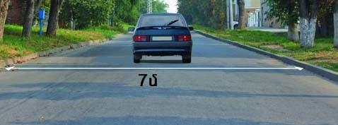
2. "Ճանապարհային երթևեկության անվտանգության ապահովման մասին" ՀՀ օրենքի համաձայն՝ տրանսպորտային միջոցի թույլատրելի առավելագույն զանգված է համարվում՝
3. Ավտոբուսների շահագործումն արգելվում է, եթե՝
4. Տրանսպորտային միջոցների շահագործումն արգելվում է, եթե`
5. Եթե մտադիր եք կատարել ձախ շրջադարձ, ո՞ր տրանսպորտային միջոցին պետք է զիջեք ճանապարհը:
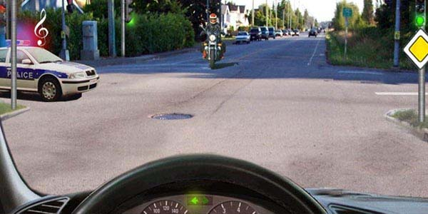
6. Ի՞նչ են ցույց տալիս նշված ճանապարհային նշանները:
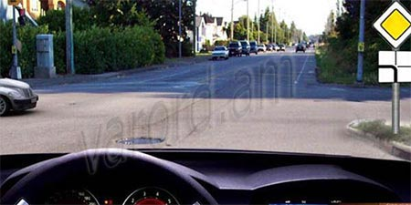
7. Խաչմերուկը տրանսպորտային միջոցները կանցնեն հետևյալ հերթականությամբ`
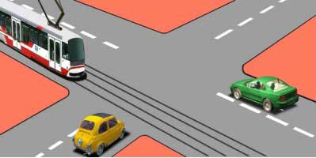
8. Այս լուսացույցի կարմիր ազդանշանի դեպքում երթևեկությունն արգվելում է`
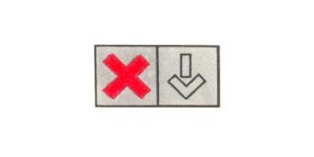
9. Թույլատրվո՞ւմ է ուղևոր նստեցնելու նպատակով կանգառ կատարել նշված վայրում
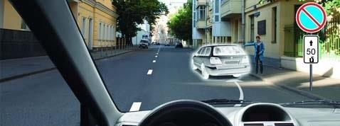
10. Այս նշանը տեղեկացնում է այնպիսի թունելի մոտենալու մասին
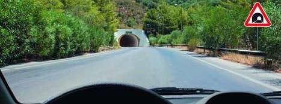
11. Խաչմերուկն անցնելիս զիջել պարտավոր ենք
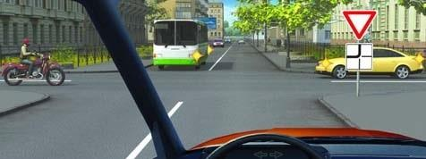
12. Ո՞ր ուղղությամբ կարող է շարունակել երթևեկությունը վարորդն այս իրավիճակում
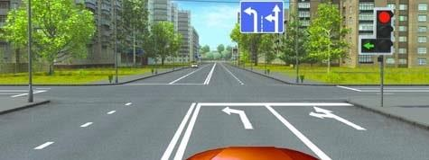
13. Երբ նարնջագույն և սպիտակ գծանշումները իրար հակասում են, վարորդները
14. Բնակավայրերում, յուրաքանչյուր ուղղությամբ մեկ երթևեկելի գոտի ունեցող և մեջտեղում տրամվայի գծեր չունեցող ճանապարհների ձախ կողմում կանգառն ու կայանումը`
15. Ի՞նչ առավելագույն արագությամբ է թույլատրվում երթևեկությունը ճկուն կցիչով քարշակելիս:
16. Ի՞նչ տարածության վրա է արգելվում վազանցը մինչև երկաթուղային գծանցը:
17. Մերձակա տարածքից դուրս եկող հատուկ ձայնային և լուսային ազդանշաններ միացրած վարորդին զիջել
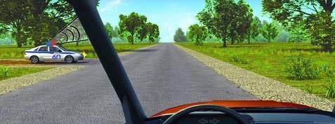
18. Տվյալ իրավիճակում թույլատրվու՞մ է անցնել երկաթուղային գծանցը:
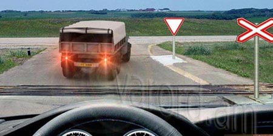
19. Ո՞ր հետագծով է թույլատրված հետադարձը
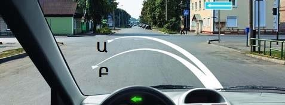